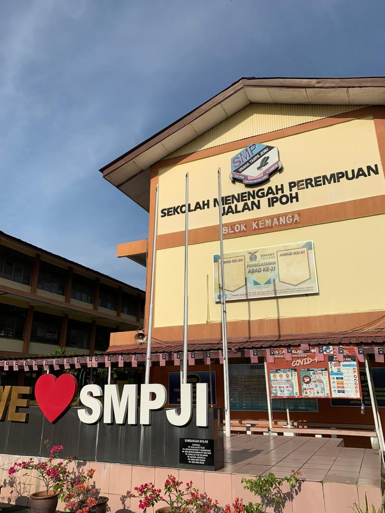

Primary education: Sekolah Kebangsaan La Salle (2) Jinjang, Kuala Lumpur.

Secondary education: Sekolah Menengah Kebangsaan Perempuan Jalan Ipoh, Kuala Lumpur.

This is where I obtain all of my knowledge and information. Aside from that, I found out a lot of interesting stuff here as well. I was glad during this study since I had approached new people I had never met before.